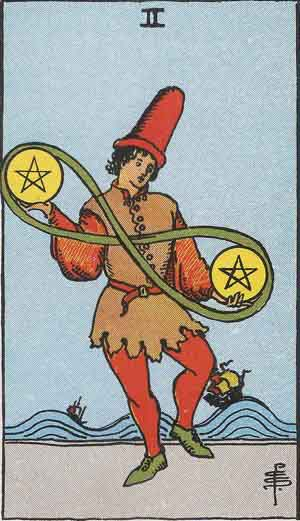

Two of Pentacles

Upright
Priorities, Balance, Adaptability
- Going with the flow may mean following your systems and rituals closer.
- Life will provide uncertainty. Remain alert, agile and patient while juggling responsibilities.
- Following rituals and systems can bring relaxation. Pay attention to what works. Then, enjoy the fact that it does!
- While getting on top of daily affairs is important when pursuing big goals, you don't have to be busy to be getting things done.
- Every big picture has individual brushstrokes.
- Do you have a mutually beneficial relationship with the items around you? Why do you need what you need?
Reversed
Disorganization, Reprioritize
- Get your self together! Are you busy being busy or are you organizing your thoughts and actions
- Are you overcommitted? You are capable of handling things when you apply focused attention.
- This isn't pretend! Do the work when the work needs done and you will be properly busy.
- Time spent analyzing is never wasted. When you act on analysis you improve your environment.
- Your juggling act is likely to fail. You will never find time, you must make time!
- What can I offer to the world that will bring my earthly reward and soothe my soul?
Quotes
The wise adapt themselves to circumstances like water to a pitcher.